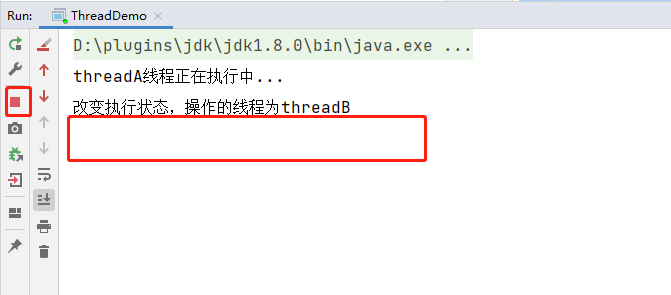
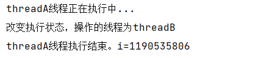

并发可见性
首先我们来回顾一下什么是并发，允许两个任务彼此干扰，同一时间点，只有一个任务运行，交替执行。
正因为并发时两个任务交替执行，两个任务间的彼此干扰，我们假设一种场景，线程A和线程B共享一个成员变量，线程A基于共享变量判断当前程序执行情况，在线程B中可以修改成员变量的内容，那这个时候我们想要通过线程B对成员变量的修改，达到控制线程A执行的目的。
那我们先写一个不加任何控制的代码，看能否实现我们的目的呢？
1 | /** |
执行结果：

可以看到，最终并没有达到我们想要的效果，线程A持续在执行，并没有执行结束。
原因
本篇我们主题就是说明并发的三大特性中的可见性，自然上述问题的根本原因就是因为线程A和线程B对成员变量isRunning的可见性问题导致。线程A运行中获取到成员变量的值，进入循环中执行，而在执行中线程B修改了成员变量的值，但是线程A并没有及时读取到线程B修改后的值，而是依然从线程A的本地内存中读取数据，自然就不会影响到线程A的执行情况了。
那什么是可见性呢？
当一个线程修改了共享变量的值，其他线程能够看到修改的值。
java内存模型是通过变量修改后将新值同步回主内存，在变量读取前从内存刷新变量值依赖主内存作为传递媒介的方法来实现可见性的。
如何保证可见性
- 通过
volatile关键字 - 通过内存屏障保证可见性（Java级别）
- 通过
synchronized关键字保证可见性 - 通过
Lock保证可见性 - 通过
final关键字保证可见性
解决问题
- 在上述代码中给成员变量添加
volatile关键字，程序能够成功执行结束

添加内存屏障
1
2
3
4
5
6
7
8
9
10
11
12
13
14
15
16public class UnsafeFactory {
/**
* 获取 Unsafe 对象
* @return
*/
public static Unsafe getUnsafe() {
try {
Field field = Unsafe.class.getDeclaredField("theUnsafe");
field.setAccessible(true);
return (Unsafe) field.get(null);
} catch (Exception e) {
e.printStackTrace();
}
return null;
}
}UnsafeFactory.getUnsafe.storeFence();
在循环中添加输出语句
System.out.println(i);
输出什么不重要，关键是有输出语句，这个之所以能解决，我们可以点进去看一下println中的代码

可以看到是
synchronized修饰的，正是因为这个关键字，才得以解决上述的问题。主动调用
Thread.yield()，主动调用释放时间片LockSupport.unpark(Thread.currentThread());，发放许可将
int i修改为成员变量并用volatile修饰将int类型的i修改为Integer类型
上面的方案都是可以解决当前问题的，但是为什么呢？
想要分析这个的原因，那我们首先需要了解JMM内存模型，这个的java的内存模型，是一种共享内存模型。每个线程都有自己的内存空间，用来存储成员变量的副本。
通过内存模型中的，我们可以了解到，线程B在修改了内存变量的值后，线程A没有及时去从主内存中获取最新的值，而是从线程A的本地内存中读取缓存的变量值，就会出现问题。我们要解决问题，只需要让线程A的本地缓存失效，或者通过添加内存屏障、或者主动调用让线程A切换上下文，重新从主内存中获取最新的值。那就能解决问题了。
volatile
storeLoad JVM内存屏障 —-> (汇编层面指令)lock前缀指令: lock addl $0, $0(%rsp)
lock前缀指令不是内存屏障的指令，但是有内存屏障的效果，缓存失效
总结
java并发中可见性的保证？总的来说就是两种：
jvm层面storeLoad内存屏障- 上下文切换 （
Thread.yield()）

...
...
Copyright 2021 sunfy.top ALL Rights Reserved